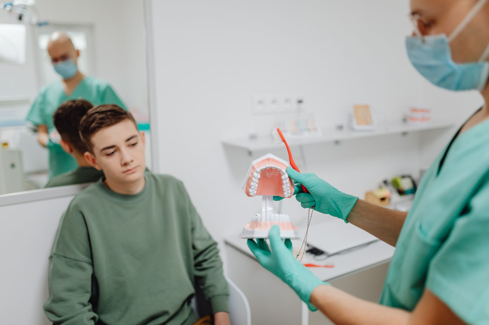

Soins des enfants
Premières visites, prévention des caries, scellement des sillons, examens M'T dents.
Un dentiste qui accepte encore de nouveaux patients, et qui soigne les enfants comme les grands-parents.
Trouver un dentiste à Angers peut prendre des mois. Notre cabinet accueille de nouveaux patients, réserve le mercredi aux enfants et pratique le tiers payant. Trois générations de familles angevines nous font confiance.
Pour une urgence (douleur, dent cassée), appelez le matin : des créneaux sont gardés chaque jour.

Cliquez sur votre situation : le motif de rendez-vous se remplit tout seul.
Nos soins
Premières visites, prévention des caries, scellement des sillons, examens M'T dents.
Un bilan annuel pour éviter les soins lourds.
Soins conservateurs pour garder vos dents le plus longtemps possible.
Avec des options « 100 % Santé » sans reste à charge quand elles sont adaptées.
Douleur, dent cassée, abcès : des créneaux gardés chaque matin.
Adaptation des prothèses, soins des gencives, rendez-vous sans attente.
Votre rendez-vous
Téléphone ou formulaire : dites-nous qui vient et pourquoi.
Créneau proposé, documents à apporter indiqués.
Examen, radio si nécessaire, explications.
Si des soins sont nécessaires, on les planifie avec vous.
Au quotidien
Léa, 6 ans
Famille Morin
Monique, 78 ans
Nos engagements
Dr Anne-Laure Chauvin, chirurgien-dentiste, soins des enfants
« Enfin un dentiste qui prend de nouveaux patients à Angers. Mes deux enfants adorent le mercredi au cabinet. »
« Mal aux dents un lundi, vue le matin même. Explications claires et tarifs annoncés. »
Questions fréquentes
Votre question n'est pas là ?
Appelez-nous au 02 61 91 26 38.
Oui, adultes et enfants. Nous vous proposons un premier rendez-vous de bilan.
Une première visite est conseillée dès les premières dents, et l'Assurance maladie propose des examens de prévention gratuits aux âges clés (programme M'T dents).
Oui, sur la part de l'Assurance maladie, et sur la part complémentaire avec la plupart des mutuelles.
Appelez le cabinet dès l'ouverture : des créneaux sont gardés chaque matin. Le week-end et les jours fériés, contactez le service de garde dentaire de votre département ou le 15.
Certaines couronnes, bridges et prothèses sans reste à charge si vous avez une complémentaire santé responsable. Nous vous la proposons quand elle convient.
Votre carte Vitale, votre attestation de mutuelle et, si vous en avez, vos anciennes radios.
Rendez-vous
Indiquez qui vient et pourquoi. Nous vous rappelons pour proposer un créneau.
Du lundi au vendredi, 8 h 30 à 18 h 30, mercredi pour les enfants
14 boulevard Foch, 49100 Angers
Patients venant de Angers, Avrillé, Trélazé, Les Ponts-de-Cé, Saint-Barthélemy-d'Anjou, Beaucouzé.